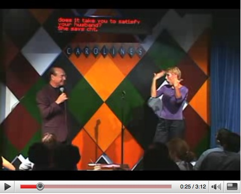

BobGolub1. (2007, December 6). Stand-up Comedy for the Deaf and hard of hearing people. Dick Capice at Carolines in New York City. Bob Golub developed and produce the first stand-up show in 1981.
BobGolub1. (2007, December 6). Stand-up Comedy for the Deaf and hard of hearing people. Dick Capice at Carolines in New York City. Bob Golub developed and produce the first stand-up show in 1981.

(The image above is a still from Stand-up Comedy for the Deaf and hard of hearing people.)
BobGolub1. (2007, December 6). Stand-up Comedy for the Deaf and hard of hearing people. Dick Capice at Carolines in New York City. Bob Golub developed and produce the first stand-up show in 1981.
Return to the table of contents for "Humor and stories for interpreters".